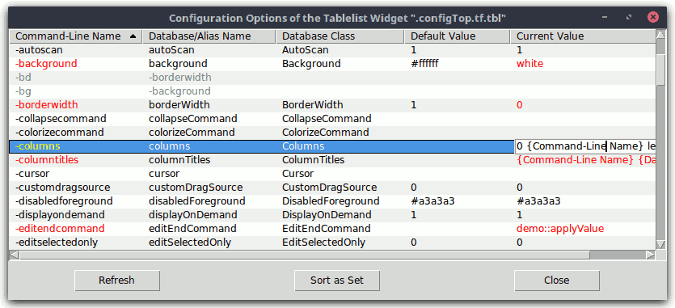
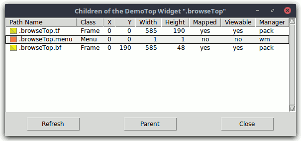
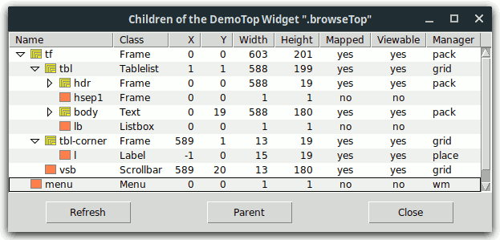
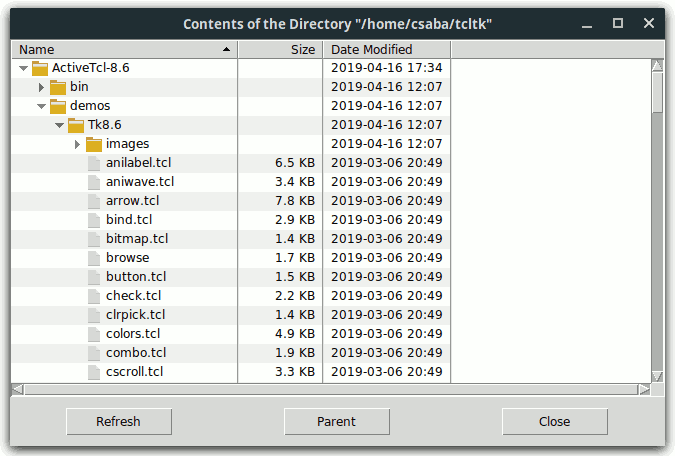
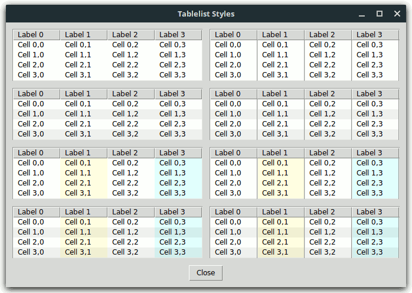
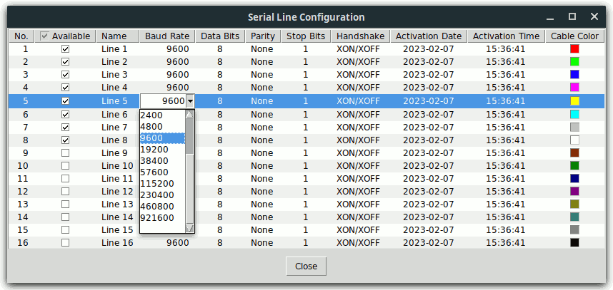
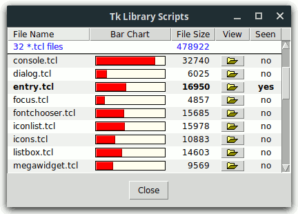
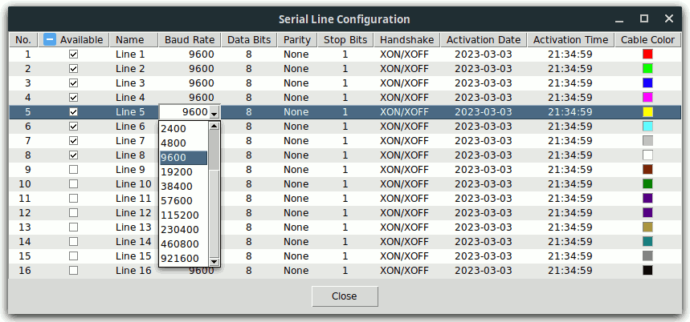
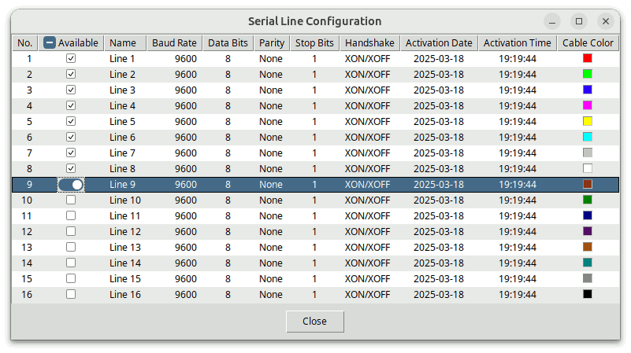

tablelist::scalingpcttablelist::svgfmtTablelist is a library package for Tcl/Tk versions 8.4 or higher, written in pure Tcl/Tk code. It contains:
A tablelist is a multi-column listbox and tree widget. The width of
each column can be dynamic (i.e., just large enough to hold all its elements,
including the header) or static (specified in characters or pixels).
The columns are, per default, resizable. The alignment of each column
can be specified as left, right, or
center.
The columns, rows, and cells can be configured individually. Several
of the global and column-specific options refer to the header titles,
implemented as label widgets. For instance, the
-labelcommand option specifies a Tcl command to be invoked when
mouse button 1 is released over a header label. The most common value
of this option sorts the items based on the respective column.
The Tablelist package provides a great variety of tree styles controlling the look & feel of the column that displays the tree hierarchy with the aid of indentations and expand/collapse controls.
Interactive editing of the elements of a tablelist widget can be enabled for individual cells and for entire columns. A great variety of widgets from the Tk core and from the packages tile, BWidget, Iwidgets, combobox, ctext, and Mentry (or Mentry_tile) is supported for being used as embedded edit window. In addition, a rich set of keyboard bindings is provided for a comfortable navigation between the editable cells.
The Tcl command corresponding to a tablelist widget is very similar to the
one associated with a normal listbox. There are column-, row-, and
cell-specific counterparts of the configure and
cget subcommands (columnconfigure,
rowconfigure, cellconfigure, ...). They can
be used, among others, to insert images and embedded windows into the cells
and the header labels. The index, nearest,
and see command options refer to the rows, but similar
subcommands are provided for the columns and cells (columnindex,
cellindex, ...). The items can be sorted with the
sort, sortbycolumn, and
sortbycolumnlist command options.
The bindings defined for the body of a tablelist widget make it behave
just like a normal listbox. This includes the support for the virtual
event <<ListboxSelect>> (which is equivalent to
<<TablelistSelect>>). In addition, versions
2.3 or higher of the widget callback package Wcb (written in pure Tcl/Tk code
as well) can be used to define callbacks for the activate,
selection set, and selection
clear commands, and Wcb versions 3.0 or higher also support
callbacks for the activatecell, cellselection
set, and cellselection clear
commands. The download location of Wcb is
https://www.nemethi.de
Tablelist is available for free download from the same URL as Wcb.
The distribution file is tablelist7.5.tar.gz for UNIX and
tablelist7_5.zip for Windows. These files contain the same
information, except for the additional carriage return character preceding
the linefeed at the end of each line in the text files for Windows.
Tablelist is also included in tklib, which has the address
https://core.tcl.tk/tklib
Install the package as a subdirectory of one of the directories given by
the auto_path variable. For example, you can install it as
a subdirectory of the lib directory within your Tcl/Tk
installation.
To install Tablelist on UNIX, cd to the desired
directory and unpack the distribution file
tablelist7.5.tar.gz:
gunzip -c tablelist7.5.tar.gz | tar -xf -
On most UNIX systems this can be replaced with
tar -zxf tablelist7.5.tar.gz
Both commands will create a directory named tablelist7.5,
with the subdirectories demos, doc, and
scripts.
On Windows, use WinZip or some other program capable of unpacking
the distribution file tablelist7_5.zip into the directory
tablelist7.5, with the subdirectories demos,
doc, and scripts.
The file tablelistEdit.tcl in the scripts
directory is only needed for applications making use of interactive cell
editing. Similarly, the file tablelistMove.tcl in the same
directory is only required for scripts invoking the move or
movecolumn command. Finally, the file
tablelistThemes.tcl is only needed for applications using the
Tablelist_tile package (see next section).
Notice that in tklib the Tablelist demos directory is
replaced with the subdirectory tablelist of the
examples directory. Please take this into account when
reading the examples below.
The Tablelist distribution provides two packages, called Tablelist
and Tablelist_tile. The main difference between the two is that
Tablelist_tile enables the tile-based, theme-specific appearance of tablelist
widgets; this package requires tile 0.6 or higher. It is not possible
to use both packages in one and the same application, because both are
implemented in the same tablelist namespace and provide
identical commands.
To be able to access the commands and variables of the Tablelist package, your scripts must contain one of the lines
package require tablelist ?version? package require Tablelist ?version?
You can use either one of the two statements above because the file
tablelist.tcl contains both lines
package provide tablelist ... package provide Tablelist ...
Likewise, to be able to access the commands and variables of the Tablelist_tile package, your scripts must contain one of the lines
package require tablelist_tile ?version? package require Tablelist_tile ?version?
Again, you can use either one of the two statements above because the file
tablelist_tile.tcl contains both lines
package provide tablelist_tile ... package provide Tablelist_tile ...
You are free to remove one of the above lines from
tablelist.tcl and tablelist_tile.tcl, respectively,
if you want to prevent the corresponding packages from making themselves
known under two different names each. Of course, by doing so you
restrict the argument of package require to a single
name per package.
Since the packages Tablelist and Tablelist_tile are implemented in the
tablelist namespace, you must either invoke the
namespace import tablelist::pattern ?tablelist::pattern ...?
command to import the procedures you need, or use qualified names
like tablelist::tablelist. In the examples below we have
chosen the latter approach.
To access Tablelist variables, you must use qualified
names. There are only 6 Tablelist variables (and one more when using
Tablelist_tile) that are designed to be accessed outside the namespace
tablelist:
tablelist::version holds the current version
number of the Tablelist and Tablelist_tile packages.tablelist::library holds the location of the
Tablelist installation directory.tablelist::scalingpct is set when
loading the Tablelist or Tablelist_tile package via package
require to the scaling percentage corresponding to the
display's DPI scaling level. Tablelist adapts, among others, the
default sort arrow style on X11 and Windows Vista, 7, 8, and 10+, as well
as the sizes of the tree styles vistaAero,
vistaClassic, win7Aero, win7Classic,
and win10 to the value of this variable. The currently
supported values are 100, 125, 150,
175, and 200. You can use this variable,
e.g., if you want to create images of different sizes, depending on the DPI
scaling level. For example, if your application uses images of size
16 x 16 on an unscaled display and tablelist::scalingpct has
the value 150, then the image size for this display should be
24 x 24.tablelist::svgfmt is set to a Tcl list that you can
pass to the commands that create or manipulate SVG images as the value of
their -format option to make sure that your images will be
properly scaled.tablelist::strictTk (having the
default value 0) controls the strict listbox-compatibility of
the default bindings.tablelist::usingTile has
the value 0 in the Tablelist package and the value
1 in Tablelist_tile.tablelist::themeDefaults holds
the theme-specific default values of a series of Tablelist configuration
options.tablelist::scalingpctThe Tablelist code sets the variable tablelist::scalingpct to
the value returned by the public procedure
scaleutil::scalingPercentage of the scaleutil package, which is
bundled with Tablelist. The way this value is computed depends on the
windowing system:
On Windows and Mac OS X/11+ the scaling percentage is computed
from [tk scaling]. Note that on Mac OS X/11+ the
result is always 100, regardless of the display's scaling
level. On this system the desktop engine automatically scales
everything as needed.
On X11, computing the scaling percentage from [tk
scaling] is done as fallback method only, because the
implementation of display scaling is highly dependent on the desktop
environment and it mostly manipulates system resources that are resident
outside of Xlib, which Tk is based on. (Traditional X applications like
bitmap and xmag are also affected by this.)
With the partial exception of Xfce and MATE (see below), the procedure
computes the scaling percentage from the value of the X resource
Xft.dpi, by executing the xrdb application.
On GNOME-based systems where xrdb is not installed per default
(e.g., Solus GNOME and Solus Budgie), it uses the xrandr
application and the file ~/.config/monitors.xml instead.
scaleutil::scalingPercentage to 200, otherwise it
will be computed from the value of the font DPI, given by the X resource
Xft.dpi. The value of the font DPI can be set in the
Fonts tab of the Appearance dialog or (on Linux Lite 5+) via
the HiDPI Settings dialog.scaleutil::scalingPercentage
auto-detects which one of the "Regular" ("100%") and "HiDPI" ("200%") modes
corresponds to the preset "Auto-detect" ("auto detect") mode. If the
"HiDPI" ("200%") mode was selected by the user or auto-detected by the
procedure, then the scaling percentage will be set to 200,
otherwise it will be computed from the value of the font DPI, given by the
X resource Xft.dpi. The value of the font DPI can be set
via the Font Rendering Details dialog, which in turn can be opened
from within the Fonts tab of the Appearance Preferences
dialog.100
or 200. In newer GNOME and Budgie versions on Ubuntu one
can enable the x11-randr-fractional-scaling as experimental
feature, which adds (at least) 125 %, 150 %, and 175 % to the list of
supported scaling percentages. Note that, due to the way this
fractional scaling is implemented, the value returned by
scaleutil::scalingPercentage will be 200,
regardless of the selected display scaling. Cinnamon versions 4.6 and
later also support fractional scaling; if activated then the scaling
percentage returned by the procedure will be 200, regardless
of the selected display scaling.100 or 200. In newer GNOME
versions one can enable the experimental feature
scale-monitor-framebuffer, which adds (at least) 125 %, 150 %,
and 175 % to the list of supported scaling percentages. With this
feature enabled, the value returned by
scaleutil::scalingPercentage will be 100 for all
scaling levels, due to the fact that in this case, instead of window
contents, monitor framebuffers will be scaled in a logical pixel coordinate
space.100,
125, 150, 175, or 200,
depending on the display's scaling level.100, regardless of the display's scaling level.On GNOME and Budgie, the display scaling can be set in the Displays
page of the Settings dialog, but the value of the X resource
Xft.dpi, which is used by the procedure
scaleutil::scalingPercentage, can also be manipulated by setting
the scaling factor of the fonts via the Tweaks application.
Likewise, on Cinnamon the display scaling can be set in the Display
page of the System Settings dialog, but the value of the X resource
Xft.dpi can also be manipulated by setting the text scaling
factor via the Font Selection page of the System Settings
dialog. Finally, on KDE Plasma the display scaling can be set in the
Display Configuration page of the System Settings dialog, but
the value of the font DPI, given by the X resource Xft.dpi can
also be set via the Fonts page of the System Settings
dialog.
Besides computing the scaling percentage, the procedure
scaleutil::scalingPercentage performs a series of additional
tasks. Among others, it changes the default height of the ttk::treeview
rows from the hard-coded value of 20 pixels to a more reasonable one, based
on the metrics of the font used by the Treeview style (usually
TkDefaultFont), and makes sure that this step will be repeated
whenever the virtual event <<ThemeChanged>> is
received (e.g., because the value of the Treeview style's
-font option has changed), or the virtual event
<<TkWorldChanged>> with the user_data
field (%d) set to FontChanged is received. If
the Tk version is later than 8.6.11 or 8.7a5, this virtual event is sent by
the Tk engine to all widgets when a font is changed, for example, by
invoking font configure (see TIP 608).
The additional steps described in the rest of this section are only
performed if the scaling percentage is greater than 100.
On X11, the procedure synchronizes the scaling factor used by Tk to
convert between physical units and pixels with the scaling percentage, by
passing a value derived from the latter to the tk
scaling command. While in the vast majority of
applications this is the desired and recommended behavior, there might be
cases where you want to suppress this step because your application might
have its own logic for determining the value of Tk's scaling factor.
You can achieve this by inserting the line
namespace eval ::scaleutil { set keepTkScaling 1 }
before loading Tablelist or Tablelist_tile via package
require.
The procedure scaleutil::scalingPercentage also corrects the
sizes of the standard fonts if needed. These fonts
(TkDefaultFont, TkTextFont, etc.) are defined in
the file $tk_library/ttk/fonts.tcl. For quite a long time,
the font sizes for X11 given in this file were sizes in pixels, which was not
suitable for use on HiDPI displays. This caused several Linux
distributions to bundle patched versions of this file, in which the sizes in
pixels are replaced with sizes in points. The same fix was committed in
February 2020 into the Tk core repository and is now contained in Tk 8.7a5
and later. To make sure that, regardless of the Tk version, the font
sizes will suit the display's scaling level, the procedure examines this
library file and, if the latter contains sizes in pixels, then it sets the
-size option of the standard fonts to corresponding sizes in
points (without altering the file). In addition, for the "2x" mode on
Xfce, the procedure doubles the sizes (in points) of the standard fonts (the
way display scaling works on that desktop makes this necessary).
The procedure also scales:
alt and
default, some styling options of the ttk::scrollbar,
ttk::scale, ttk::progressbar, ttk::combobox, ttk::spinbox, ttk::button,
toolbutton, ttk::menubutton, ttk::checkbutton, ttk::radiobutton,
ttk::notebook, ttk::panedwindow, and ttk::treeview widgets;clam, some styling
options of the ttk::scrollbar, ttk::scale, ttk::progressbar, ttk::combobox,
ttk::spinbox, ttk::button, toolbutton, ttk::menubutton, ttk::checkbutton,
ttk::radiobutton, ttk::notebook, ttk::panedwindow, ttk::treeview, and
ttk::labelframe widgets;classic, some styling
options of the ttk::scrollbar, ttk::scale, ttk::progressbar, ttk::combobox,
ttk::spinbox, ttk::button, toolbutton, ttk::menubutton, ttk::checkbutton,
ttk::radiobutton, ttk::notebook, ttk::panedwindow, and ttk::treeview
widgets;vista, some styling
options of the ttk::combobox, ttk::button, toolbutton, ttk::menubutton,
ttk::checkbutton, ttk::radiobutton, ttk::notebook, ttk::panedwindow, and
ttk::treeview widgets;winnative, some styling
options of the ttk::scale, ttk::progressbar, ttk::combobox, ttk::spinbox,
toolbutton, ttk::menubutton, ttk::checkbutton, ttk::radiobutton,
ttk::notebook, ttk::panedwindow, and ttk::treeview widgets;xpnative, some styling
options of the ttk::combobox, ttk::spinbox, ttk::button, toolbutton,
ttk::menubutton, ttk::checkbutton, ttk::radiobutton, ttk::notebook,
ttk::panedwindow, and ttk::treeview widgets.In addition, the procedure scaleutil::scalingPercentage makes
sure that in the vista and xpnative themes the
indicators of the ttk::checkbutton and ttk::radiobutton widgets will appear
properly scaled, regardless of the Tk release being used. (A
long-standing bug in the implementation of these widgets was fixed in May
2020 and is now contained in both Tk 8.6.11 and later and 8.7a5 and later,
but the procedure provides an automatic workaround for the Tk versions that
are still affected by this bug.)
Note that in Tk versions earlier than 8.7b1/9, the Tk core checkbutton and
radiobutton widgets, as well as the indicators of the ttk::checkbutton and
ttk::radiobutton widgets of the alt and winnative
themes are not scalable (they scale automatically in Tk 8.7b1/9 and
later). The same holds true for the ttk::sizegrip widget in the
built-in themes.
tablelist::svgfmtBefore returning one of the scaling percentage values 100,
125, 150, 175, and 200,
the procedure scaleutil::scalingPercentage saves the display's
real scaling percentage in the variable
::scaleutil::scalingPct. This value, which is restricted
to multiples of 25, can be greater than 200,
especially when running Androwish on a tablet or smartphone.
If the Tk version is either at least 8.7 (with built-in SVG support), or
8.6 and the tksvg package can be loaded into the interpreter, then Tablelist
additionally sets the variable tablelist::svgfmt to
[list svg -scale [expr {$::scaleutil::scalingPct / 100.0}]]
Typical values are {svg -scale 1.0}, {svg
-scale 1.25}, {svg -scale 2.0}, etc.
It is recommended to pass the value of the variable
tablelist::svgfmt to the commands image create
photo, imageName configure,
imageName put, and imageName
read as the value of their -format option when
creating or manipulating SVG images, to make sure that their sizes will
correspond to the display's real scaling percentage.
A tablelist widget consists of a body (containing the items) and a header (displaying the column titles and optional header items). Both components are contained in a hull, implemented as a frame. The header has a rather complex structure, consisting, among others, of frame and label widgets. While in the Tablelist package all of these components are Tk widgets, the Tablelist_tile package uses both Tk and tile frame and label widgets. Due to several incompatibilities between Tk and tile, it is currently not possible to replace all Tk widgets making up a tablelist with their tile counterparts.
From the above it follows that the Tablelist_tile package will only
work as expected if the Tk frame and label commands
haven't been overridden by using namespace import -force
ttk::* at global scope. While earlier tile releases
suggested using this command at global scope for the really adventurous, in
newer tile versions this is considered a Really Bad Idea, causing many things
to break. Instead, you should explicitly invoke
ttk::frame, ttk::label, etc. whenever you want to
use a tile widget.
Overriding some other Tk widgets at global scope may be equally dangerous when using various widgets from the Tk core and from the packages BWidget, Iwidgets, combobox (by Bryan Oakley), ctext, and Mentry for interactive cell editing, because these packages expect Tk widgets, which may not always be replaced by their tile counterparts.
Another restriction to be taken into account is due to the fact that in
earlier tile versions the (ttk::)style theme use
command could only be used to set the current theme, but not to retrieve
it. For this reason, if the Tablelist_tile package cannot get the
current theme with the aid of ttk::style theme use
then it makes use of the variable ttk::currentTheme or
tile::currentTheme (depending on the tile version), which is set
by the ttk::setTheme or tile::setTheme
command. From this it follows that if the tile version being used
doesn't support the ttk::style theme use command
without an argument then the tile-based tablelist widgets will only have the
expected appearance if the platform-specific default theme is either left
unchanged or replaced with another theme by invoking the library procedure
ttk::setTheme or tile::setTheme, depending on the
tile version. (See also the tablelist::setTheme command.)
After these cautions concerning the use of tile, the rest of this section describes the differences between the packages Tablelist and Tablelist_tile.
The Tablelist_tile package checks whether the required Tk and tile versions are present, by executing the commands
package require Tk 8.4-
if {$::tk_version < 8.5 || [regexp {^8\.5a[1-5]$} $::tk_patchLevel]} {
package require tile 0.6-
}
The second command above reflects the fact that, beginning with Tk 8.5a6, tile is integrated into the Tk core and therefore it should only be loaded explicitly when using an earlier Tk version.
Apart from this and the _tile suffix in the
package require command, the only difference (from the
programmer's point of view) between the packages Tablelist and Tablelist_tile
is related to the supported configuration options: The
-highlightbackground, -highlightcolor,
-highlightthickness, -labelbackground,
-labelactivebackground, -labelactiveforeground,
-labeldisabledforeground, and -labelheight options
(the latter and -labelbackground at both widget and column
levels), present in the Tablelist package, are not supported by
Tablelist_tile. The first three are standard Tk widget options that are
not available for tile widgets. The -labelbackground
option stands for the -background option of the column labels,
and current versions of the tile engine don't support setting the background
color for these widgets with a special header layout. The remaining
options stand for the -activebackground,
-activeforeground, -disabledforeground, and
-height options of the column labels, and these configuration
options are not supported for tile label widgets.
Also, take into account that in some themes, setting the
-labelborderwidth option (at widget or column level) to a value
other than the default might be ignored by tile and thus could cause
alignment problems. This is because the border of tile widgets is drawn
with theme-specific methods, which will not always produce the results known
from Tk widgets.
Finally, notice that, when using the tileqt theme, the
version number of the tile::theme::tileqt package must be 0.4 or
higher, and tileqt itself won't work with tile versions earlier
than 0.7.
The file config.tcl in the demos directory
contains a procedure demo::displayConfig that displays the
configuration options of an arbitrary widget in a tablelist contained in a
newly created toplevel widget and allows you to edit these options.
This procedure can prove to be quite useful during interactive GUI
development. To test it, start wish and evaluate the file
by using the source command as follows:
wish was started in the demos directory then
it is sufficient to enter
source config.tcl
wish was started in some other directory then you can use
the tablelist::library variable to find the location of the
file. For example, assuming that your Tablelist installation has
the directory structure described in the How to
install it? section, the required commands are:
package require tablelist source [file join $tablelist::library demos config.tcl]
In both cases, the script will print the following message to
stdout:
To display the configuration options of an arbitrary widget, enter
demo::displayConfig <widgetName>
<widgetName> can be the path name of any already
existing widget. For example, if you enter
demo::displayConfig .
then you will see that a tablelist widget .configTop.tf.tbl
in a new toplevel window is created and its name is printed to
stdout. If you then enter
demo::displayConfig .configTop.tf.tbl
then another toplevel window containing the tablelist widget
.configTop2.tf.tbl will pop up. The latter looks like in
the following figure:

It is assumed that the Tcl command associated with the widget specified by
<widgetName> has a configure subcommand
which, when invoked without any argument, returns a list describing all of
the available configuration options for the widget, in the common format
known from the standard Tk widgets. The
demo::displayConfig procedure inserts the items of this list
into a scrolled tablelist with 5 dynamic-width columns and interactive sort
capability, and returns the name of the newly created tablelist widget:
package require tablelist
namespace eval demo {
#
# Add some entries to the Tk option database for the following
# widget hierarchy within a toplevel widget of the class DemoTop:
#
# Name Class
# -----------------------------
# tf Frame
# tbl Tabellist
# vsb, hsb Scrollbar
# bf Frame
# b1, b2, b3 Button
#
if {[tk windowingsystem] eq "x11"} {
#
# Create the font TkDefaultFont if not yet present
#
catch {font create TkDefaultFont -family Helvetica -size 9}
option add *DemoTop*Font TkDefaultFont
option add *DemoTop*selectBackground #5294e2
option add *DemoTop*selectForeground white
}
option add *DemoTop.tf.borderWidth 1
option add *DemoTop.tf.relief sunken
option add *DemoTop.tf.tbl.borderWidth 0
option add *DemoTop.tf.tbl.highlightThickness 0
option add *DemoTop.tf.tbl.background white
option add *DemoTop.tf.tbl.stripeBackground #f0f0f0
option add *DemoTop.tf.tbl.setGrid yes
option add *DemoTop.tf.tbl*Entry.background white
option add *DemoTop.bf.Button.width 10
}
#------------------------------------------------------------------------------
# demo::displayConfig
#
# Displays the configuration options of the widget w in a tablelist widget
# contained in a newly created toplevel widget. Returns the name of the
# tablelist widget.
#------------------------------------------------------------------------------
proc demo::displayConfig w {
if {![winfo exists $w]} {
bell
tk_messageBox -title "Error" -icon error -message \
"Bad window path name \"$w\""
return ""
}
#
# Create a toplevel widget of the class DemoTop
#
set top .configTop
for {set n 2} {[winfo exists $top]} {incr n} {
set top .configTop$n
}
toplevel $top -class DemoTop
wm title $top "Configuration Options of the [winfo class $w] Widget \"$w\""
#
# Create a scrolled tablelist widget with 5 dynamic-width
# columns and interactive sort capability within the toplevel
#
set tf $top.tf
frame $tf
set tbl $tf.tbl
set vsb $tf.vsb
set hsb $tf.hsb
tablelist::tablelist $tbl \
-columns {0 "Command-Line Name"
0 "Database/Alias Name"
0 "Database Class"
0 "Default Value"
0 "Current Value"} \
-labelcommand tablelist::sortByColumn -sortcommand demo::compareAsSet \
-editendcommand demo::applyValue -height 15 -width 100 -stretch all \
-xscrollcommand [list $hsb set] -yscrollcommand [list $vsb set]
if {[$tbl cget -selectborderwidth] == 0} {
$tbl configure -spacing 1
}
$tbl columnconfigure 3 -maxwidth 30
$tbl columnconfigure 4 -maxwidth 30 -editable yes
scrollbar $vsb -orient vertical -command [list $tbl yview]
scrollbar $hsb -orient horizontal -command [list $tbl xview]
#
# Create three buttons within a frame child of the toplevel widget
#
set bf $top.bf
frame $bf
set b1 $bf.b1
set b2 $bf.b2
set b3 $bf.b3
button $b1 -text "Refresh" -command [list demo::putConfig $w $tbl]
button $b2 -text "Sort as Set" -command [list $tbl sort]
button $b3 -text "Close" -command [list destroy $top]
#
# Manage the widgets
#
grid $tbl -row 0 -rowspan 2 -column 0 -sticky news
if {[tk windowingsystem] eq "win32"} {
grid $vsb -row 0 -rowspan 2 -column 1 -sticky ns
} else {
grid [$tbl cornerpath] -row 0 -column 1 -sticky ew
grid $vsb -row 1 -column 1 -sticky ns
}
grid $hsb -row 2 -column 0 -sticky ew
grid rowconfigure $tf 1 -weight 1
grid columnconfigure $tf 0 -weight 1
pack $b1 $b2 $b3 -side left -expand yes -pady 7p
pack $bf -side bottom -fill x
pack $tf -side top -expand yes -fill both
#
# Populate the tablelist with the configuration options of the given widget
#
putConfig $w $tbl
return $tbl
}
The procedure invokes the tablelist::tablelist command to create a
tablelist widget. The value of the -columns option passed to this
command specifies the widths, titles, and alignments of the 5 columns.
The width of each column is given as 0, specifying that the
column's width is to be made just large enough to hold all the elements in
the column, including its title, which is the string following the
width. We have omitted the alignment specifications (which can
optionally follow the titles), because the columns shall all be
left-justified.
Since all columns are of dynamic width and left-aligned, instead of
-columns we could have used the -columntitles option as
follows:
tablelist::tablelist $tbl \
-columntitles {"Command-Line Name"
"Database/Alias Name"
"Database Class"
"Default Value"
"Current Value"} \
. . .
The command tablelist::sortByColumn,
specified as the value of the -labelcommand option, will be
invoked whenever mouse button 1 is released over one of the labels.
This command sorts the items based on the column corresponding to that label,
in the right order, by invoking the sortbycolumn subcommand of the
Tcl command associated with the tablelist widget.
As seen from the creation of the button displaying the text
"Sort as Set", the items will also be sorted by invoking
the sort
subcommand. This makes it necessary to specify a command to be used for
the comparison of the items, as the value of the -sortcommand option. In
our example this is the demo::compareAsSet procedure shown
below.
The -editendcommand option
specifies the command to be invoked automatically whenever the interactive
editing of a cell's content is finished and the final content of the
temporary embedded entry widget used for the editing are different from its
original one. Per default, the elements of a tablelist widget can only
be edited programmatically, but we enable the interactive editing for the
cells of the last column with the aid of the -editable column configuration
option.
By specifying the value all for the -stretch configuration option we
make sure that all of the columns will be stretched to eliminate the blank
space that might appear at the right of the table.
If the default value of the -selectborderwidth option is
0 (this is the case on the Windows and Macintosh platforms, and
also in an X11 envronment with Tk 8.5 or above) then we use the
-spacing option to
provide some additional space above and below the rows.
For the last two columns of the tablelist we use the -maxwidth column configuration
option, to make sure that the dynamic widths of these columns won't exceed 30
average-width characters.
Besides the options given on the command line, our tablelist widget will
automatically inherit the ones contained in the Tk option database entries
specified in the namespace initialization preceding the
demo::displayConfig procedure. The database name
stripeBackground corresponds to the -stripebackground
configuration option. According to this entry, every other row of the
tablelist widget will be displayed in the background color
#f0f0f0, which improves the readability of the items and gives
the widget a nice appearance.
The option database entries for *DemoTop.tf.borderWidth,
*DemoTop.tf.relief, *DemoTop.tf.tbl.borderWidth,
and *DemoTop.tf.tbl.highlightThickness are implicitly used when
managing the tablelist widget and the two scrollbars with the aid of
grid. Notice how the cornerpath subcommand enables us
to achieve a native look & feel with respect to the vertical scrollbar on the
windowing systems other than win32 (i.e., aqua and
x11).
We populate the tablelist by invoking the demo::putConfig
procedure discussed below. The same script is associated with the
"Refresh" button, as the value of its -command configuration
option. This procedure is implemented as follows:
#------------------------------------------------------------------------------ # demo::putConfig # # Outputs the configuration options of the widget w into the tablelist widget # tbl. #------------------------------------------------------------------------------ proc demo::putConfig {w tbl} { if {![winfo exists $w]} { bell tk_messageBox -title "Error" -icon error -message \ "Bad window path name \"$w\"" -parent [winfo toplevel $tbl] return "" } # # Display the configuration options of w in the tablelist widget tbl # $tbl delete 0 end foreach configSet [$w configure] { # # Insert the list configSet into the tablelist widget # $tbl insert end $configSet if {[llength $configSet] == 2} { $tbl rowconfigure end -foreground gray50 -selectforeground gray75 $tbl cellconfigure end -editable no } else { # # Change the colors of the first and last cell of the row # if the current value is different from the default one # set default [lindex $configSet 3] set current [lindex $configSet 4] if {$default ne $current} { foreach col {0 4} { $tbl cellconfigure end,$col \ -foreground red -selectforeground yellow } } } } $tbl sortbycolumn 0 $tbl activate 0 $tbl attrib widget $w }
After deleting the current items of the tablelist widget tbl,
the procedure inserts the items of the list returned by the
configure subcommand of the Tcl command associated with the
widget w. For each option that is merely an abbreviated
form of some other one, we use the rowconfigure tablelist
subcommand to change the normal and selection foreground colors of the item
just appended, and we disable the interactive editing in the last inserted
cell by using the -editable cell configuration
option. The cellconfigure tablelist
operation is also invoked for each real option whose current value is
different from the default one, to change the values of the
-foreground and -selectforeground options of the
cells no. 0 and 4, containing the command-line name of the option and its
current value.
Each tablelist widget may have any number of private attributes,
which can be set and retrieved with the aid of the attrib subcommand of the Tcl command
corresponding to the widget. The demo::putConfig procedure
sets the widget attribute to the name of the widget whose
options are displayed in the tablelist.
The implementation of the comparison command
demo::compareAsSet mentioned above is quite simple:
#------------------------------------------------------------------------------
# demo::compareAsSet
#
# Compares two items of a tablelist widget used to display the configuration
# options of an arbitrary widget. The item in which the current value is
# different from the default one is considered to be less than the other; if
# both items fulfil this condition or its negation then string comparison is
# applied to the two option names.
#------------------------------------------------------------------------------
proc demo::compareAsSet {item1 item2} {
foreach {opt1 dbName1 dbClass1 default1 current1} $item1 \
{opt2 dbName2 dbClass2 default2 current2} $item2 {
set changed1 [expr {$default1 ne $current1}]
set changed2 [expr {$default2 ne $current2}]
if {$changed1 == $changed2} {
return [string compare $opt1 $opt2]
} elseif {$changed1} {
return -1
} else {
return 1
}
}
}
Finally, here is the implementation of the demo::applyValue
procedure, specified as the value of the -editendcommand
option:
#------------------------------------------------------------------------------ # demo::applyValue # # Applies the new value of the configuraton option contained in the given row # of the tablelist widget tbl to the widget whose options are displayed in it, # and updates the colors of the first and last cell of the row. #------------------------------------------------------------------------------ proc demo::applyValue {tbl row col text} { # # Try to apply the new value of the option contained in # the given row to the widget whose options are displayed # in the tablelist; reject the value if the attempt fails # set w [$tbl attrib widget] set opt [$tbl cellcget $row,0 -text] if {[catch {$w configure $opt $text} result] != 0} { bell tk_messageBox -title "Error" -icon error -message $result \ -parent [winfo toplevel $tbl] $tbl rejectinput return "" } # # Replace the new option value with its canonical form and # update the colors of the first and last cell of the row # set text [$w cget $opt] set default [$tbl cellcget $row,3 -text] if {$default eq $text} { foreach col {0 4} { $tbl cellconfigure $row,$col \ -foreground "" -selectforeground "" } } else { foreach col {0 4} { $tbl cellconfigure $row,$col \ -foreground red -selectforeground yellow } } return $text }
The procedure retrieves the name of the widget whose options are displayed
in the tablelist, as the value of its widget attribute, and
invokes the cellcget
tablelist subcommand to get the name of the option specified in the first
cell of the row whose last element was just edited. Next, it tries to
apply the new value of the option to the widget, and invokes the
rejectinput
subcommand if the attempt fails. Otherwise it replaces the new option
value with its canonical form and updates the normal and selection foreground
colors of the cells no. 0 and 4. The canonical form of the option value
is given by the cget subcommand of the Tcl command associated
with that widget. For example, a boolean value will always be replaced
with 1 or 0, even if the entry contains the string
yes or no. The procedure returns this
canonical option value, thus making sure that the latter will become the new
content of the cell that was just edited.
The files browse.tcl and browseTree.tcl in the
demos directory contain a procedure
demo::displayChildren that displays information about the
children of an arbitrary widget in a tablelist contained in a newly created
toplevel widget. To test it, start wish and evaluate the
chosen file by using the source command, in a similar way as in
the case of the previous example.
Both scripts will print the following message to stdout:
To display information about the children of an arbitrary widget, enter
demo::displayChildren <widgetName>
<widgetName> can be the path name of any already
existing widget. For example, if you enter
demo::displayChildren .
then you will see that a tablelist widget .browseTop.tf.tbl
in a new toplevel window is created and its name is printed to
stdout.
The tablelist created by the procedure demo::displayChildren
in the file browse.tcl is a multi-column listbox:

The tablelist created by the procedure of the same name in the file
browseTree.tcl is a multi-column tree widget:

The demo::displayChildren command inserts some data of the
children of the widget specified by <widgetName> into a
vertically scrolled tablelist with 9 dynamic-width columns and interactive
sort capability, and returns the name of the newly created tablelist
widget. By double-clicking an item (e.g., the one containing the path
name .browseTop in browse.tcl and the name
browseTop in browseTree.tcl) or invoking the first
entry of a pop-up menu within the body of the tablelist, you can display the
data of the children of the widget corresponding to the selected item, and
with the second menu entry you can display its configuration options (see the
previous example for details). To go one level
up, click on the "Parent" button.
There is a lot of code common to the scripts browse.tcl and
browseTree.tcl. We will restrict the description below to
the second one.
package require tablelist
namespace eval demo {
variable dir [file dirname [info script]]
#
# Create two images corresponding to the display's DPI scaling level
#
variable leafImg [image create photo]
variable compImg [image create photo]
variable pct ""
if {$::tk_version >= 8.7 || [catch {package require tksvg}] == 0} {
variable fmt $::tablelist::svgfmt
$leafImg read [file join $dir leaf.svg] -format $fmt
$compImg read [file join $dir comp.svg] -format $fmt
} else {
set pct $::tablelist::scalingpct
$leafImg read [file join $dir leaf$pct.gif] -format gif
$compImg read [file join $dir comp$pct.gif] -format gif
}
}
source [file join $demo::dir config.tcl]
If the Tk version is at least 8.7 or the tksvg package can be loaded into
the interpreter, then the two images representing a "compound" widget (with
children) and a "leaf" widget (without children), respectively, are created
from the files comp.svg and leaf.svg, respectively,
using the public variable ::tablelist::svgfmt. Otherwise
they are created from files whose names contain the display's DPI scaling
percentage, given by the public variable
::tablelist::scalingpct. The files
comp100.gif and leaf100.gif contain images of size
16 x 14, the files *125.gif contain images of size 20 x 18, the
files *150.gif contain images of size 24 x 21, and so on.
In the first case only two *.svg files are needed and the images
will be scaled automatically, according to the display's real scaling
percentage, which can be greater than the maximum value 200 of
the variable ::tablelist::scalingpct. This benefit comes
in handy especially when running Androwish on a tablet or smartphone.
In the second case a total number of 10 *.gif (or
*.png, or *.xbm) files are needed to make sure that
the sizes of the images will correspond to the value of the variable
::tablelist::scalingpct.
#------------------------------------------------------------------------------ # demo::displayChildren # # Displays information on the children of the widget w in a tablelist widget # contained in a newly created toplevel widget. Returns the name of the # tablelist widget. #------------------------------------------------------------------------------ proc demo::displayChildren w { if {![winfo exists $w]} { bell tk_messageBox -title "Error" -icon error -message \ "Bad window path name \"$w\"" return "" } # # Create a toplevel widget of the class DemoTop # set top .browseTop for {set n 2} {[winfo exists $top]} {incr n} { set top .browseTop$n } toplevel $top -class DemoTop # # Create a vertically scrolled tablelist widget with 9 dynamic-width # columns and interactive sort capability within the toplevel # set tf $top.tf frame $tf set tbl $tf.tbl set vsb $tf.vsb tablelist::tablelist $tbl \ -columns {0 "Name" left 0 "Class" left 0 "X" right 0 "Y" right 0 "Width" right 0 "Height" right 0 "Mapped" center 0 "Viewable" center 0 "Manager" left} \ -expandcommand demo::expandCmd -labelcommand demo::labelCmd \ -yscrollcommand [list $vsb set] -setgrid no -width 0 if {[$tbl cget -selectborderwidth] == 0} { $tbl configure -spacing 1 } foreach col {2 3 4 5} { $tbl columnconfigure $col -sortmode integer } foreach col {6 7} { $tbl columnconfigure $col -formatcommand demo::formatBoolean } scrollbar $vsb -orient vertical -command [list $tbl yview] # # On X11 configure the tablelist according # to the display's DPI scaling level # variable winSys ;# see config.tcl if {[tk windowingsystem] eq "x11"} { variable pct ;# ""|100|125|...|200 $tbl configure -treestyle bicolor$pct } # # When displaying the information about the children of any # ancestor of the label widgets, the widths of some of the # labels and thus also the widths and x coordinates of some # children may change. For this reason, make sure the items # will be updated after any change in the sizes of the labels # foreach l [$tbl labels] { bind $l <Configure> [list demo::updateItemsDelayed $tbl] } bind $tbl <Configure> [list demo::updateItemsDelayed $tbl] # # Create a pop-up menu with two command entries; bind the script # associated with its first entry to the <Double-1> event, too # set menu $top.menu menu $menu -tearoff no $menu add command -label "Display Children" \ -command [list demo::putChildrenOfSelWidget $tbl] $menu add command -label "Display Config" \ -command [list demo::dispConfigOfSelWidget $tbl] set bodyTag [$tbl bodytag] bind $bodyTag <Double-1> [list demo::putChildrenOfSelWidget $tbl] bind $bodyTag <<Button3>> [bind TablelistBody <Button-1>] bind $bodyTag <<Button3>> +[bind TablelistBody <ButtonRelease-1>] bind $bodyTag <<Button3>> +[list demo::postPopupMenu $top %X %Y] # # Create three buttons within a frame child of the toplevel widget # set bf $top.bf frame $bf set b1 $bf.b1 set b2 $bf.b2 set b3 $bf.b3 button $b1 -text "Refresh" button $b2 -text "Parent" button $b3 -text "Close" -command [list destroy $top] # # Manage the widgets # . . . # # Populate the tablelist with the data of the given widget's children # putChildren $w $tbl root return $tbl }
The procedure invokes the tablelist::tablelist command to create a
tablelist widget. The value of the -columns option passed to this
command specifies the widths, titles, and alignments of the 9 columns.
The width of each column is given as 0, specifying that the
column's width is to be made just large enough to hold all the elements in
the column, including its title, which is the string following the
width. Each of the titles is followed by an alignment, which indicates
how to justify both the elements and the title of the respective column.
We want to display not only the data of the given widget's children, but
also those of its further descendants. To this end, we need a command
to be invoked whenever an item corresponding to a widget with children gets
expanded. This command is specified as the value of the -expandcommand option.
As discussed later, the demo::expandCmd procedure will insert
the children of the row that is about to be expanded, if it has no children
yet.
The command demo::labelCmd, specified as the value of the
-labelcommand
option, will be invoked whenever mouse button 1 is released over one of the
labels. We will discuss this procedure later.
We specify the value 0 for the widget's -width option, meaning that the
tablelist's width shall be made just large enough to hold all its
columns.
After creating the tablelist widget, we make sure that the elements of its
columns 2, 3, 4, and 5 (displaying the x and y coordinates as well as the
widths and heights of the children) will be compared as integers when sorting
the items based on one of these columns. We do this with the aid of the
columnconfigure tablelist
operation.
The same columnconfigure subcommand enables us to specify
that, when displaying the elements of columns 6 and 7 (having the titles
"Mapped" and "Viewable", respectively), the boolean
values 1 and 0 will be replaced with the strings
"yes" and "no", returned by the
demo::formatBoolean command shown below.
In a scaling-aware application the value of the -treestyle tablelist option
should reflect the display's DPI scaling level. On Windows Vista, 7, 8,
and 10+ the default value of this option already fulfills this requirement,
and on Mac OS X/11+ the desktop engine automatically scales everything as
needed. On X11 we set the -treestyle option to
bicolor in the presence of SVG support and to one of
bicolor100, ..., bicolor200 otherwise (depending on
the value of the variable ::tablelist::scalingpct).
After configuring the -treestyle option on X11, we iterate
over the elements of the list containing the path names of all header labels
of the tablelist widget, returned by the labels subcommand of the Tcl command
corresponding to the widget. For each element of the list, we bind the
procedure demo::updateItemsDelayed to the
<Configure> event. In this way we make sure the
procedure will be invoked whenever the header label indicated by that list
element changes size.
The four invocations of the bind command following the
creation of the pop-up menu make use of a binding tag whose name depends on
the path name of the tablelist widget and is returned by the bodytag subcommand of the Tcl
command associated with the tablelist widget. The advantage of using
this tag instead of the path name of the tablelist's body is that this
binding tag is associated not only with the body but also with the separator
frames and with the labels displaying embedded images. This is
important in our example because we want to make sure the
<<Button3>> and <Double-1> events
will be handled in the same way within a label containing an embedded image
as in the rest of the tablelist's body. Both the <<Button3>> virtual
event (used in the first three bind commands) and the
TablelistBody
binding tag (used in the first binding script) are created by the Tablelist
package. The first three bind commands make sure that a
<<Button3>> virtual event will select and activate
the nearest item and will post a pop-up menu with two command entries that
refer to the widget described by that item.
We populate the tablelist by invoking the demo::putChildren
procedure, implemented as follows:
#------------------------------------------------------------------------------ # demo::putChildren # # Outputs the data of the children of the widget w into the tablelist widget # tbl, as child items of the one identified by nodeIdx. #------------------------------------------------------------------------------ proc demo::putChildren {w tbl nodeIdx} { . . . if {$nodeIdx eq "root"} { set top [winfo toplevel $tbl] wm title $top "Children of the [winfo class $w] Widget \"$w\"" $tbl resetsortinfo $tbl delete 0 end set row 0 } else { set row [expr {$nodeIdx + 1}] } # # Display the data of the children of the # widget w in the tablelist widget tbl # variable leafImg variable compImg foreach c [winfo children $w] { # # Insert the data of the current child into the tablelist widget # set item {} lappend item \ [winfo name $c] [winfo class $c] [winfo x $c] [winfo y $c] \ [winfo width $c] [winfo height $c] [winfo ismapped $c] \ [winfo viewable $c] [winfo manager $c] $tbl insertchild $nodeIdx end $item # # Embed an image into the first cell of the row; mark the # row as collapsed if the child widget has children itself # if {[llength [winfo children $c]] == 0} { $tbl cellconfigure end,0 -image $leafImg } else { $tbl cellconfigure end,0 -image $compImg $tbl collapse $row } $tbl rowattrib $row pathName $c incr row } if {$nodeIdx eq "root"} { # # Configure the "Refresh" and "Parent" buttons # $top.bf.b1 configure -command [list demo::refreshView $w $tbl] set b2 $top.bf.b2 set p [winfo parent $w] if {$p eq ""} { $b2 configure -state disabled } else { $b2 configure -state normal -command \ [list demo::putChildren $p $tbl root] } } }
The last argument of this procedure indicates the tree node to become the
parent of the items displaying the data of the children of the widget passed
as first argument. If this parent is the invisible root
node then we first reset the sorting information by invoking the
resetsortinfo
tablelist subcommand and delete the current items of the tablelist widget
tbl. The procedure then iterates over the children of the
specified widget and inserts the items built from some data retrieved by
using the winfo command. Each new item is added to the end
of the parent node's list of children with the aid of the insertchild(ren)
subcommand.
For each child widget, we invoke the cellconfigure tablelist
operation to set the value of the -image option of the
corresponding row's first cell, containing the leaf name of the child.
In this way, the procedure embeds the image $leafImg or
$compImg into the first cell, depending on whether the child in
question is a leaf or a composite widget. (Recall that both images were
created outside this procedure, within the initialization of the
demo namespace.)
We mark every newly created row corresponding to a child widget that has
children itself as collapsed by invoking the collapse subcommand. This
will prepend an expand/collapse control to the content of the first column,
whose column index 0 is the default value of the -treecolumn configuration
option.
We use the rowattrib tablelist subcommand to
remember the full path name of every child widget as a private attribute
associated with the corresponding tablelist row, because it will be needed at
several places later on.
As mentioned above, the demo::expandCmd procedure will be
invoked automatically when expanding a row that contains an expand/collapse
control:
#------------------------------------------------------------------------------ # demo::expandCmd # # Outputs the data of the children of the widget whose leaf name is displayed # in the first cell of the specified row of the tablelist widget tbl, as child # items of the one identified by row. #------------------------------------------------------------------------------ proc demo::expandCmd {tbl row} { if {[$tbl childcount $row] == 0} { set w [$tbl rowattrib $row pathName] putChildren $w $tbl $row # # Apply the last sorting (if any) to the new items # $tbl refreshsorting $row } }
The procedure invokes the childcount subcommand to check
whether the children of the row that is about to be expanded have already
been inserted into the tablelist widget, and inserts them if this is not the
case. It also makes sure that the child items will be displayed in the
order corresponding to the last sorting (if any), with the aid of the
refreshsorting
tablelist subcommand. Any sorting (if needed) will only be performed on
the child items just inserted into the tablelist widget.
The demo::formatBoolean and demo::labelCmd
procedures mentioned above are trivial:
#------------------------------------------------------------------------------ # demo::formatBoolean # # Returns "yes" or "no", according to the specified boolean value. #------------------------------------------------------------------------------ proc demo::formatBoolean val { return [expr {$val ? "yes" : "no"}] } #------------------------------------------------------------------------------ # demo::labelCmd # # Sorts the content of the tablelist widget tbl by its col'th column and makes # sure the items will be updated 500 ms later (because one of the items might # refer to a canvas containing the arrow that displays the sorting order). #------------------------------------------------------------------------------ proc demo::labelCmd {tbl col} { tablelist::sortByColumn $tbl $col updateItemsDelayed $tbl }
The command tablelist::sortByColumn sorts
the items of the tablelist widget by the specified column in the right order,
by invoking the sortbycolumn subcommand of the
Tcl command associated with the tablelist widget.
The implementation of the demo::updateItemsDelayed command,
invoked in this procedure and already encountered in the
demo::displayChildren procedure above, is quite simple:
#------------------------------------------------------------------------------ # demo::updateItemsDelayed # # Arranges for the items of the tablelist widget tbl to be updated 500 ms later. #------------------------------------------------------------------------------ proc demo::updateItemsDelayed tbl { # # Schedule the demo::updateItems command for execution # 500 ms later, but only if it is not yet pending # if {[$tbl attrib afterId] eq ""} { $tbl attrib afterId [after 500 [list demo::updateItems $tbl]] } } #------------------------------------------------------------------------------ # demo::updateItems # # Updates the items of the tablelist widget tbl. #------------------------------------------------------------------------------ proc demo::updateItems tbl { # # Reset the tablelist's "afterId" attribute # $tbl attrib afterId "" # # Update the items # set rowCount [$tbl size] for {set row 0} {$row < $rowCount} {incr row} { set c [$tbl cellcget $row,0 -text] if {![winfo exists $c]} { continue } set item {} lappend item \ [winfo name $c] [winfo class $c] [winfo x $c] [winfo y $c] \ [winfo width $c] [winfo height $c] [winfo ismapped $c] \ [winfo viewable $c] [winfo manager $c] $tbl rowconfigure $row -text $item } # # Repeat the last sort operation (if any) # $tbl refreshsorting }
As already mentioned in the previous example,
each tablelist widget may have any number of private attributes, which can be
set and retrieved with the aid of the attrib subcommand of the Tcl command
corresponding to the widget. The afterId attribute is set
by the demo::updateItemsDelayed procedure when sheduling the
demo::updateItems command for execution 500 ms later, but only
if its value is an empty string. For this reason, the
demo::updateItems procedure resets this attribute. It also
makes use of the cellcget tablelist subcommand to
get the path names contained in the first cell of each row, and updates the
data of the children with the aid of the rowconfigure subcommand.
After updating the items, the procedure repeats the most recent sorting based
on a column (if there was one), with the aid of the refreshsorting
subcommand.
The procedures demo::putChildrenOfSelWidget,
demo::dispConfigOfSelWidget, and
demo::postPopupMenu (see demo::displayChildren) are
also straight-forward. For example, the
demo::putChildrenOfSelWidget command shown below makes use of
the curselection
subcommand to get the index of the selected row. More precisely,
curselection returns a list, but in our case this list will have
exactly one element, hence it can be used directly as the first component of
a cell index.
#------------------------------------------------------------------------------
# demo::putChildrenOfSelWidget
#
# Outputs the data of the children of the selected widget into the tablelist
# widget tbl.
#------------------------------------------------------------------------------
proc demo::putChildrenOfSelWidget tbl {
set w [$tbl cellcget [$tbl curselection],0 -text]
if {![winfo exists $w]} {
bell
tk_messageBox -title "Error" -icon error -message \
"Bad window path name \"$w\"" -parent [winfo toplevel $tbl]
return ""
}
if {[llength [winfo children $w]] == 0} {
bell
} else {
putChildren $w $tbl
}
}
The procedure demo::refreshView, associated with the
"Refresh" button, is implemented as follows:
#------------------------------------------------------------------------------ # demo::refreshView # # Redisplays the data of the children of the widget w in the tablelist widget # tbl and restores the expanded states of the items as well as the vertical # view. #------------------------------------------------------------------------------ proc demo::refreshView {w tbl} { # # Save the vertical view and get the path names of # the child widgets displayed in the expanded rows # set yView [$tbl yview] foreach key [$tbl expandedkeys] { set pathName [$tbl rowattrib $key pathName] set expandedWidgets($pathName) 1 } # # Redisplay the data of the widget's (possibly changed) children and # restore the expanded states of the children, along with the vertical view # putChildren $w $tbl root restoreExpandedStates $tbl root expandedWidgets $tbl yview moveto [lindex $yView 0] }
Before redisplaying the tablelist's content via
demo::putChildren, we get the full keys of the currently
expanded items with the aid of the expandedkeys tablelist
subcommand and insert the correspondig widget paths into the array
expandedWidgets. After redisplaying the data of the
(possibly changed) children of the widget given as first argument, we pass
this array to the demo::restoreExpandedStates procedure shown
below:
#------------------------------------------------------------------------------
# restoreExpandedStates
#
# Expands those children of the parent identified by nodeIdx that display the
# data of child widgets whose path names are the names of the elements of the
# array specified by the last argument.
#------------------------------------------------------------------------------
proc demo::restoreExpandedStates {tbl nodeIdx expandedWidgetsName} {
upvar $expandedWidgetsName expandedWidgets
foreach key [$tbl childkeys $nodeIdx] {
set pathName [$tbl rowattrib $key pathName]
if {[info exists expandedWidgets($pathName)]} {
$tbl expand $key -partly
restoreExpandedStates $tbl $key expandedWidgets
}
}
}
The procedure retrieves the list of full keys of the children of the
parent node indicated by nodeIdx, by means of the childkeys tablelist
subcommand. It then loops over this list, and for each key for which
the corresponding row was previously expanded, it invokes the expand tablelist subcommand and then
calls itself recursively to restore the expanded states of that row's
children.
The script dirViewer.tcl in the demos directory
displays the contents of the volumes mounted on the system (e.g., the root
/ on UNIX and the local drives on Windows) in a tablelist used
as multi-column tree widget:

By double-clicking an item or invoking the single entry of a pop-up menu within the body of the tablelist, you can display the content of the folder corresponding to the selected item. To go one level up, click on the "Parent" button.
There are a lot of similarities between this script and the one discussed in the previous section. In the following we will only present a few procedures that invoke tablelist commands not encountered in the examples above:
package require tablelist # # Add some entries to the Tk option database # set dir [file dirname [info script]] source [file join $dir option.tcl] # # Create three images corresponding to the display's DPI scaling level # if {$tk_version >= 8.7 || [catch {package require tksvg}] == 0} { set pct ""; set sfx "svg"; set fmt $tablelist::svgfmt } else { set pct $tablelist::scalingpct; set sfx "gif"; set fmt "gif" } foreach name {clsdFolder openFolder file} { set imgFile $name$pct.$sfx ;# e.g., "file.svg" or "file150.gif" image create photo ${name}Img -file [file join $dir $imgFile] -format $fmt }
If the Tk version is at least 8.7 or the tksvg package can be loaded into
the interpreter, then the three images representing a closed folder, an open
folder, and a file, respectively, are created from the files
clsdFolder.svg, openFolder.svg, and
file.svg, respectively, using the public variable
tablelist::svgfmt. Otherwise they are created from files
whose names contain the display's DPI scaling percentage, given by the public
variable tablelist::scalingpct. The files
clsdFolder100.gif, openFolder100.gif, and
file100.gif contain images of size 16 x 16, the files
*125.gif contain images of size 20 x 20, the files
*150.gif contain images of size 24 x 24, and so on. In
the first case only three *.svg files are needed and the images
will be scaled automatically, according to the display's real scaling
percentage, which can be greater than the maximum value 200 of
the variable tablelist::scalingpct. This benefit comes in
handy especially when running Androwish on a tablet or smartphone. In
the second case a total number of 15 *.gif (or
*.png) files are needed to make sure that the sizes of the
images will correspond to the value of the variable
tablelist::scalingpct.
#------------------------------------------------------------------------------ # displayContents # # Displays the content of the directory dir in a tablelist widget. #------------------------------------------------------------------------------ proc displayContents dir { # # Create a scrolled tablelist widget with 3 dynamic- # width columns and interactive sort capability # set tf .tf frame $tf -class ScrollArea set tbl $tf.tbl set vsb $tf.vsb set hsb $tf.hsb tablelist::tablelist $tbl \ -columns {0 "Name" left 0 "Size" right 0 "Date Modified" left} \ -height 16 -width 80 -movablecolumns no -setgrid no \ -showseparators yes -expandcommand expandCmd \ -xscrollcommand [list $hsb set] -yscrollcommand [list $vsb set] if {[$tbl cget -selectborderwidth] == 0} { $tbl configure -spacing 1 } $tbl columnconfigure 0 -formatcommand formatString -sortmode dictionary $tbl columnconfigure 1 -formatcommand formatSize -sortmode integer $tbl columnconfigure 2 -formatcommand formatString scrollbar $vsb -orient vertical -command [list $tbl yview] scrollbar $hsb -orient horizontal -command [list $tbl xview] # # On X11 configure the tablelist according # to the display's DPI scaling level # if {[tk windowingsystem] eq "x11"} { global pct ;# ""|100|125|...|200 $tbl configure -treestyle bicolor$pct } bind $tbl <<TablelistYViewChanged>> [list addImages $tbl] . . . # # Populate the tablelist with the content of the given directory # $tbl sortbycolumn 0 putContents $dir $tbl root }
The procedure displayContents creates the tablelist widget
and the two scrollbars as children of a frame of class
ScrollArea. For this class, the file
option.tcl, sourced into the main script, contains
some look & feel related settings similar to the ones encountered in our
first example:
option add *ScrollArea.borderWidth 1 option add *ScrollArea.relief sunken option add *ScrollArea.Tablelist.borderWidth 0 option add *ScrollArea.Tablelist.highlightThickness 0
In a scaling-aware application the value of the -treestyle tablelist option
should reflect the display's DPI scaling level. On Windows Vista, 7, 8,
and 10+ the default value of this option already fulfills this requirement,
and on Mac OS X/11+ the desktop engine automatically scales everything as
needed. On X11 we set the -treestyle option to
bicolor in the presence of SVG support and to one of
bicolor100, ..., bicolor200 otherwise (depending on
the value of the variable tablelist::scalingpct).
Whenever the vertical view in the tablelist's window changes, the widget
receives a <<TablelistYViewChanged>>
virtual event. Our binding for this event invokes the
addImages procedure, which we show and discuss towards the end
of this section.
Let's see how the script populates the tablelist with the content of the given directory:
#------------------------------------------------------------------------------ # putContents # # Outputs the content of the directory dir into the tablelist widget tbl, as # child items of the one identified by nodeIdx. #------------------------------------------------------------------------------ proc putContents {dir tbl nodeIdx} { . . . if {$nodeIdx eq "root"} { if {$dir eq ""} { if {[llength [file volumes]] == 1} { wm title . "Contents of the File System" } else { wm title . "Contents of the File Systems" } } else { wm title . "Contents of the Directory \"[file nativename $dir]\"" } $tbl delete 0 end set row 0 } else { set row [expr {$nodeIdx + 1}] } # # Build a list from the data of the subdirectories and # files of the directory dir. Prepend a "D" or "F" to # each entry's name and modification date & time, for # sorting purposes (it will be removed by formatString). # set itemList {} if {$dir eq ""} { foreach volume [file volumes] { lappend itemList [list D[file nativename $volume] -1 D $volume] } } else { foreach entry [glob -nocomplain -types {d f} -directory $dir *] { if {[catch {file mtime $entry} modTime] != 0} { continue } if {[file isdirectory $entry]} { lappend itemList [list D[file tail $entry] -1 \ D[clock format $modTime -format "%Y-%m-%d %H:%M"] $entry] } else { lappend itemList [list F[file tail $entry] [file size $entry] \ F[clock format $modTime -format "%Y-%m-%d %H:%M"] ""] } } } # # Sort the above list and insert it into the tablelist widget # tbl as list of children of the row identified by nodeIdx # set itemList [$tbl applysorting $itemList] $tbl insertchildlist $nodeIdx end $itemList foreach item $itemList { set name [lindex $item end] if {$name ne ""} { ;# directory $tbl rowattrib $row pathName $name # # Mark the row as collapsed if the directory is non-empty # if {[file readable $name] && [llength \ [glob -nocomplain -types {d f} -directory $name *]] != 0} { $tbl collapse $row } } incr row } . . . }
The main difference between the procedure putContents above
and the procedure demo::putChildren
described in the previous section is related to the
way child items are inserted into the tablelist widget. Instead of
inserting them individually with the aid of the insertchild(ren) tablelist
subcommand, here we add the relevant data to a list of items and then invoke
the much more performant insertchildlist
subcommand. Also, instead of first inserting the items and then sorting
them via refreshsorting, we first
perform the necessary sortings on the above-mentioned list of items by
invoking the applysorting subcommand.
Again, this is much faster than sorting the already inserted child items.
This procedure also illustrates an effective technique based on the
-formatcommand column
configuration option: In the tablelist widget's internal list, the
names and modification times of the directories and files are preceded by a
D and F, respectively. This makes sure that
the directories will sort before the files (when sorting in ascending
order). When displaying the items, the Tablelist code will
automatically invoke the formatString procedure, which removes
the first character. Similarly, in the widget's internal list, the size
of a directory is set to -1, which sorts before the sizes of the
files. The formatSize procedure, invoked automatically
when displaying the items, replaces this value with an empty string:
#------------------------------------------------------------------------------ # formatString # # Returns the substring obtained from the specified value by removing its first # character. #------------------------------------------------------------------------------ proc formatString val { return [string range $val 1 end] } #------------------------------------------------------------------------------ # formatSize # # Returns an empty string if the specified value is negative and the value # itself in user-friendly format otherwise. #------------------------------------------------------------------------------ proc formatSize val { if {$val < 0} { return "" } elseif {$val < 1024} { return "$val bytes" } elseif {$val < 1048576} { return [format "%.1f KB" [expr {$val / 1024.0}]] } elseif {$val < 1073741824} { return [format "%.1f MB" [expr {$val / 1048576.0}]] } else { return [format "%.1f GB" [expr {$val / 1073741824.0}]] } } #------------------------------------------------------------------------------ # expandCmd # # Outputs the content of the directory whose leaf name is displayed in the # first cell of the specified row of the tablelist widget tbl, as child items # of the one identified by row. #------------------------------------------------------------------------------ proc expandCmd {tbl row} { if {[$tbl childcount $row] == 0} { set dir [$tbl rowattrib $row pathName] putContents $dir $tbl $row } } #------------------------------------------------------------------------------ # addImages # # Embeds an image into the first cell of each row in the current view. #------------------------------------------------------------------------------ proc addImages tbl { set topRow [$tbl index top] set btmRow [$tbl index bottom] for {set row $topRow} {$row <= $btmRow} {incr row} { if {[$tbl hasrowattrib $row pathName]} { ;;# directory item set img [expr {[$tbl isexpanded $row] ? "openFolderImg" : "clsdFolderImg"}] } else { ;;# file item set img fileImg } $tbl cellconfigure $row,0 -image $img } } . . . displayContents ""
As already mentioned, the addImages procedure is invoked
whenever the vertical view in the tablelist's window changes. It embeds
an image representing an open or closed folder, or a file into the first cell
of each row in the current view. Unlike in the previous example, here
we add the images to the items contained in the current view only, thus
saving a significant amount of time and memory.
The last line of the script invokes the procedure
displayContents with an empty string as argument, i.e., displays
the volumes mounted on the system.
The script styles.tcl in the demos directory
demonstrates some ways of making tablelist widgets smarter and improving the
readability of their items. It creates 8 tablelist widgets, shown in
the following figure:

Here is the relevant code segment:
#
# Create, configure, and populate 8 tablelist widgets
#
frame .f
for {set n 0} { $n < 8} {incr n} {
set tbl .f.tbl$n
tablelist::tablelist $tbl \
-columntitles {"Label 0" "Label 1" "Label 2" "Label 3"} \
-background white -height 4 -width 40 -stretch all
if {[$tbl cget -selectborderwidth] == 0} {
$tbl configure -spacing 1
}
switch $n {
1 {
$tbl configure -showseparators yes
}
2 {
$tbl configure -stripebackground #f0f0f0
}
3 {
$tbl configure -stripebackground #f0f0f0 -showseparators yes
}
4 {
$tbl columnconfigure 1 -background LightYellow
$tbl columnconfigure 3 -background LightCyan
}
5 {
$tbl configure -showseparators yes
$tbl columnconfigure 1 -background LightYellow
$tbl columnconfigure 3 -background LightCyan
}
6 {
$tbl configure -stripebackground #f0f0f0
$tbl columnconfigure 1 -background LightYellow \
-stripebackground #f0f0d2
$tbl columnconfigure 3 -background LightCyan \
-stripebackground #d2f0f0
}
7 {
$tbl configure -stripebackground #f0f0f0 -showseparators yes
$tbl columnconfigure 1 -background LightYellow \
-stripebackground #f0f0d2
$tbl columnconfigure 3 -background LightCyan \
-stripebackground #d2f0f0
}
}
foreach row {0 1 2 3} {
$tbl insert end \
[list "Cell $row,0" "Cell $row,1" "Cell $row,2" "Cell $row,3"]
}
}
The only configuration option used here but not discussed in the first
three examples (although already encountered in the previous one) is -showseparators. The
visual effect it produces looks nice both by itself and combined with
horizontal or vertical stripes, created by using the -stripebackground option
and the columnconfigure subcommand,
respectively.
The scripts tileWidgets.tcl, bwidget.tcl,
iwidgets.tcl, and miscWidgets.tcl in the
demos directory create a tablelist widget displaying some
parameters of 16 serial lines, and demonstrate how to use various widgets
from the Tk core and from the packages tile, BWidget, Iwidgets, combobox (by
Bryan Oakley), ctext, and Mentry (or Mentry_tile) for interactive cell
editing. The following figure shows the tablelist widget, together with
a BWidget ComboBox used to edit the content of one of its cells:

Here is the relevant code segment from the script bwidget.tcl
(the scripts tileWidgets.tcl, iwidgets.tcl, and
miscWidgets.tcl are similar). A few parts of the code are
shown in red color – we will return to this
towards the end of the section.
package require tablelist package require BWidget wm title . "Serial Line Configuration" # # Add some entries to the Tk option database # set dir [file dirname [info script]] source [file join $dir option.tcl] option add *Tablelist*Entry.background white # # Create the images "checkedImg" and "uncheckedImg", as well as 16 images of # names like "img#FF0000", displaying colors identified by names like "red" # source [file join $dir images.tcl] # # Register some widgets from the BWidget package for interactive cell editing # tablelist::addBWidgetEntry tablelist::addBWidgetSpinBox tablelist::addBWidgetComboBox # # Create a tablelist widget with editable columns (except the first one) # set tbl .tbl tablelist::tablelist $tbl \ -columns {0 "No." right 0 "Available" center 0 "Name" left 0 "Baud Rate" right 0 "Data Bits" center 0 "Parity" left 0 "Stop Bits" center 0 "Handshake" left 0 "Activation Date" center 0 "Activation Time" center 0 "Cable Color" center} \ -editstartcommand editStartCmd -editendcommand editEndCmd \ -aftercopycommand afterCopyCmd -height 0 -width 0 if {[$tbl cget -selectborderwidth] == 0} { $tbl configure -spacing 1 } $tbl columnconfigure 0 -sortmode integer $tbl columnconfigure 1 -name available -editable yes -editwindow checkbutton \ -formatcommand emptyStr -labelwindow checkbutton $tbl columnconfigure 2 -name lineName -editable yes -editwindow Entry \ -allowduplicates 0 -sortmode dictionary $tbl columnconfigure 3 -name baudRate -editable yes -editwindow ComboBox \ -sortmode integer $tbl columnconfigure 4 -name dataBits -editable yes -editwindow SpinBox $tbl columnconfigure 5 -name parity -editable yes -editwindow ComboBox $tbl columnconfigure 6 -name stopBits -editable yes -editwindow ComboBox $tbl columnconfigure 7 -name handshake -editable yes -editwindow ComboBox $tbl columnconfigure 8 -name actDate -editable yes -editwindow Entry \ -formatcommand formatDate -sortmode integer $tbl columnconfigure 9 -name actTime -editable yes -editwindow Entry \ -formatcommand formatTime -sortmode integer $tbl columnconfigure 10 -name color -editable yes -editwindow menubutton \ -formatcommand emptyStr proc emptyStr val { return "" } proc formatDate val { return [clock format $val -format "%Y-%m-%d"] } proc formatTime val { return [clock format $val -format "%H:%M:%S"] } # # Populate the tablelist widget and configure the checkbutton # embedded into the header label of the column "available" # source [file join $dir serialParams.tcl] . . .
The sizes of the images created in the file images.tcl, which
is sourced into the main script, depend on the display's scaling
level. For example:
if {$tk_version >= 8.7 || [catch {package require tksvg}] == 0} {
set fmt $tablelist::svgfmt
image create photo checkedImg -file [file join $dir checked.svg] \
-format $fmt
image create photo uncheckedImg -file [file join $dir unchecked.svg] \
-format $fmt
} else {
set pct $tablelist::scalingpct
image create photo checkedImg -file [file join $dir checked$pct.gif] \
-format gif
image create photo uncheckedImg -file [file join $dir unchecked$pct.gif] \
-format gif
}
We invoke the tablelist::addBWidgetEntry,
tablelist::addBWidgetSpinBox, and
tablelist::addBWidgetComboBox
commands to register the Entry, SpinBox, and ComboBox widgets from the
BWidget package for interactive cell editing. These commands return the
values "Entry", "SpinBox", and
"ComboBox", respectively, which we then use in the
-editwindow
column configuration option to set the edit window for the columns no. 2,
..., 10. In columns no. 1 and 10 we use the Tk core checkbutton and
menubutton widgets, which are automatically registered for interactive cell
editing.
Notice the use of the -name column configuration option,
which allows us to access the columns by their names instead of by numerical
column indices. This is important, because the file
option.tcl, which is sourced into the main script,
contains the line
option add *Tablelist.movableColumns yes
The editStartCmd and editEndCmd procedures shown
below use the columncget subcommand to
retrieve the name of the column from the numerical column index.
By the way, two further option database settings contained in the file
option.tcl are:
option add *Tablelist.labelCommand tablelist::sortByColumn option add *Tablelist.labelCommand2 tablelist::addToSortColumns
The tablelist::sortByColumn and
tablelist::addToSortColumns
commands specified in these settings enable the user to sort the items by one
or more columns, with the aid of the left mouse button and of the
Shift key.
Notice also that we set the -allowduplicates option
of the column containing the names of the serial lines to false, in order to
keep these names unique when editing them interactively.
The file serialParams.tcl, which is sourced into
the main script, contains the following code, which is related mainly to
the -labelwindow
checkbutton setting for column no. 1 and the -aftercopycommand
configuration option:
# # Populate the tablelist widget; set the activation # date & time to 10 minutes past the current clock value # set clock [expr {[clock seconds] + 600}] for {set row 0; set line 1} {$row < 16} {set row $line; incr line} { $tbl insert end [list $line [expr {$row < 8}] "Line $line" 9600 8 None 1 \ XON/XOFF $clock $clock [lindex $colorNames $row]] set availImg [expr {($row < 8) ? "checkedImg" : "uncheckedImg"}] $tbl cellconfigure $row,available -image $availImg $tbl cellconfigure $row,color -image img[lindex $colorValues $row] } # # Configure the "-command" option of the checkbutton embedded into the # header label of the column "available", and make sure that it will be # reconfigured whenever any column is moved interactively to a new position # proc configCkbtn {tbl col} { set ckbtn [$tbl labelwindowpath $col] $ckbtn configure -command [list onCkbtnToggle $tbl $col $ckbtn] } proc onCkbtnToggle {tbl col ckbtn} { upvar #0 [$ckbtn cget -variable] var $tbl fillcolumn $col -text $var $tbl fillcolumn $col -image [expr {$var ? "checkedImg" : "uncheckedImg"}] } configCkbtn $tbl available bind $tbl <<TablelistColumnMoved>> { configCkbtn %W available } bind $tbl <<ThemeChanged>> { configCkbtn %W available } # # Make sure that the checkbutton will appear in tri-state mode # set ckbtn [$tbl labelwindowpath available] set varName [$ckbtn cget -variable] if {[winfo class $ckbtn] eq "Checkbutton"} { set $varName "" } else { unset $varName } # # Selects/deselects the checkbutton embedded into the header label # of the specified column or sets it into the tri-state mode. # proc updateCkbtn {tbl row col} { set lst [$tbl getcolumns $col] set ckbtn [$tbl labelwindowpath $col] upvar #0 [$ckbtn cget -variable] var if {[lsearch -exact $lst 1] < 0} { ;# all 0 set var 0 ;# deselect } elseif {[lsearch -exact $lst 0] < 0} { ;# all 1 set var 1 ;# select } elseif {[winfo class $ckbtn] eq "Checkbutton"} { set var "" ;# tri-state mode } else { unset -nocomplain var ;# tri-state mode } } # # For the columns "available" and "color", updates # the images contained in the column's cells. # proc afterCopyCmd {tbl col} { switch [$tbl columncget $col -name] { available { # # Update the images contained in the column's cells and # the checkbutton embedded into the column's header label # for {set row 0} {$row < 16} {incr row} { set text [$tbl cellcget $row,$col -text] set img [expr {$text ? "checkedImg" : "uncheckedImg"}] $tbl cellconfigure $row,$col -image $img } updateCkbtn $tbl 0 $col } color { # # Update the images contained in the column's cells # for {set row 0} {$row < 16} {incr row} { set text [$tbl cellcget $row,$col -text] $tbl cellconfigure $row,$col -image img$::colors($text) } } } }
Concerning the configCkbtn procedure above, see REMARK 2 in
the description of the -labelwindow column
configuration option.
The editStartCmd procedure, specified as the value of the
-editstartcommand
configuration option, needs the path name of the edit window, in order to be
able to configure the widget in various ways. This is a common
situation, and Tablelist provides the editwinpath subcommand for this
purpose:
#------------------------------------------------------------------------------ # editStartCmd # # Applies some configuration options to the edit window; if the latter is a # ComboBox, the procedure populates it. #------------------------------------------------------------------------------ proc editStartCmd {tbl row col text} { set w [$tbl editwinpath] switch [$tbl columncget $col -name] { lineName { # # Set an upper limit of 20 for the number of characters # $w configure -invalidcommand bell -validate key \ -validatecommand {expr {[string length %P] <= 20}} } baudRate { # # Populate the ComboBox and allow no more # than 6 digits in its Entry component # $w configure -values {50 75 110 300 1200 2400 4800 9600 19200 38400 57600 115200 230400 460800 921600} $w configure -invalidcommand bell -validate key -validatecommand \ {expr {[string length %P] <= 6 && [regexp {^[0-9]*$} %S]}} } dataBits { # # Configure the SpinBox # $w configure -range {5 8 1} -editable no } parity { # # Populate the ComboBox and make it non-editable # $w configure -values {None Even Odd Mark Space} -editable no } . . . color { # # Populate the menu and make sure the menubutton will display the # color name rather than $text, which is "", due to -formatcommand # set menu [$w cget -menu] foreach name $::colorNames { $menu add radiobutton -compound left \ -image img$::colors($name) -label $name } $menu entryconfigure 8 -columnbreak 1 return [$tbl cellcget $row,$col -text] } } return $text }
The editEndCmd procedure, specified as the value of the
-editendcommand
configuration option, is responsible for a final validation of the edit
window's text. Another purpose of this command is to convert the text
contained in the edit window to the cell's new internal content, which
is necessary because the internal value of the activation date and time is a
clock value in seconds:
#------------------------------------------------------------------------------ # editEndCmd # # Performs a final validation of the text contained in the edit window and gets # the cell's internal content. #------------------------------------------------------------------------------ proc editEndCmd {tbl row col text} { switch [$tbl columncget $col -name] { available { # # Update the image contained in the cell and the checkbutton # embedded into the header label of the column "available" # set img [expr {$text ? "checkedImg" : "uncheckedImg"}] $tbl cellconfigure $row,$col -image $img after idle [list updateCkbtn $tbl $row $col] } baudRate { # # Check whether the baud rate is an integer in the range 50..921600 # if {![regexp {^[0-9]+$} $text] || $text < 50 || $text > 921600} { bell tk_messageBox -title "Error" -icon error -message \ "The baud rate must be an integer in the range 50..921600" $tbl rejectinput } } actDate { # # Get the activation date in seconds from the last argument # if {[catch {clock scan $text} actDate] != 0} { bell tk_messageBox -title "Error" -icon error -message "Invalid date" $tbl rejectinput return "" } # # Check whether the activation clock value is later than the # current one; if this is the case then make sure the cells # "actDate" and "actTime" will have the same internal value # set actTime [$tbl cellcget $row,actTime -text] set actClock [clock scan [formatTime $actTime] -base $actDate] if {$actClock <= [clock seconds]} { bell tk_messageBox -title "Error" -icon error -message \ "The activation date & time must be in the future" $tbl rejectinput } else { $tbl cellconfigure $row,actTime -text $actClock return $actClock } } . . . color { # # Update the image contained in the cell # $tbl cellconfigure $row,$col -image img$::colors($text) } } return $text }
Instead of making the "Available" column editable via a temporary
checkbutton and displaying the images "checkedImg" and
"uncheckedImg" in its cells, we can use the embedcheckbuttons
subcommand to populate the column with persistently embedded
checkbuttons. The necessary changes are as follows:
$tbl embedcheckbuttons 1 updateCkbtn
onCkbtnToggle
procedure, insert the following loop:
for {set row 0} {$row < 16} {incr row} {
set ckbtn2 [$tbl windowpath $row,available].ckbtn
set [$ckbtn2 cget -variable] $var
}
As mentioned above, the scripts tileWidgets.tcl,
iwidgets.tcl, and miscWidgets.tcl are similar to
bwidget.tcl. The first one makes use of the tile entry,
spinbox, combobox, checkbutton, and menubutton widgets. The second one
uses (besides the Tk core checkbutton and menubutton) the entryfield,
spinint, combobox, dateentry, and timeentry widgets from the Iwidgets package
and the validation facilities specific to that library. The third
script makes use of the entry, spinbox, checkbutton, and menubutton widgets
from the Tk core, Bryan Oakley's combobox, and of the mentry widgets of type
"Date" and "Time", and it performs the entry
validation with the aid of the Wcb package (which is required anyway for the
Mentry library).
The script embeddedWindows.tcl in the demos
directory creates a tablelist widget whose items correspond to the Tk library
scripts. The size of each file (in bytes) is not only displayed as a
number, but is also illustrated with the aid of a frame with red background,
created as a child of an embedded frame with ivory background. The
files can be viewed by clicking on the corresponding embedded button
widgets.
The following screenshot shows the tablelist widget with the mouse cursor
over the first header label, causing this label to appear in
active state:

First, we create and populate the tablelist widget:
package require tablelist wm title . "Tk Library Scripts" # # Add some entries to the Tk option database # set dir [file dirname [info script]] source [file join $dir option.tcl] # # Create the font TkFixedFont if not yet present # catch {font create TkFixedFont -family Courier -size 9} # # Create an image corresponding to the display's DPI scaling # level, to be displayed in buttons embedded in a tablelist widget # if {$tk_version >= 8.7 || [catch {package require tksvg}] == 0} { set fmt $tablelist::svgfmt image create photo viewImg -file [file join $dir view.svg] -format $fmt } else { set pct $tablelist::scalingpct image create photo viewImg -file [file join $dir view$pct.gif] -format gif } # # Create a vertically scrolled tablelist widget with 5 # dynamic-width columns and interactive sort capability # set tf .tf frame $tf -class ScrollArea set tbl $tf.tbl set vsb $tf.vsb tablelist::tablelist $tbl \ -columns {0 "File Name" left 0 "Bar Chart" center 0 "File Size" right 0 "View" center 0 "Seen" center} \ -setgrid no -yscrollcommand [list $vsb set] -width 0 if {[$tbl cget -selectborderwidth] == 0} { $tbl configure -spacing 1 } $tbl columnconfigure 0 -name fileName $tbl columnconfigure 1 -formatcommand emptyStr -sortmode integer \ -stretchwindow yes $tbl columnconfigure 2 -name fileSize -sortmode integer $tbl columnconfigure 4 -name seen scrollbar $vsb -orient vertical -command [list $tbl yview] proc emptyStr val { return "" } # # Create a bold font # set tblFont [$tbl cget -font] set size [font actual $tblFont -size] if {$size == 0} { ;# e.g., on Ubuntu set size 9 } eval font create BoldFont [font actual $tblFont] -size $size -weight bold # # Populate the tablelist widget # cd $tk_library set totalSize 0 set maxSize 0 foreach fileName [lsort [glob *.tcl]] { set fileSize [file size $fileName] $tbl insert end [list $fileName $fileSize $fileSize "" no] incr totalSize $fileSize if {$fileSize > $maxSize} { set maxSize $fileSize } } if {$tk_version >= 8.5} { $tbl header insert 0 [list "[$tbl size] *.tcl files" "" $totalSize "" ""] $tbl header rowconfigure 0 -foreground blue }
The image representing a "view" action is created either from the file
view.svg or from a GIF image file whose name contains the
display's DPI scaling percentage, given by the public variable
tablelist::scalingpct.
We insert the size of each file not only into the column with the
title "File Size", but also into the column
"Bar Chart". Since we configured this column with
-formatcommand emptyStr, the text will remain hidden in
it. It will, however, be needed when sorting the items by that
column.
After populating the tablelist's body, we create a header item displaying
the total number and size of the library files, by invoking the
header
insert subcommand, and change its foreground color with the
aid of the header
rowconfigure subcommand.
To be able to create the embedded windows, we have first to implement the
creation scripts for them, as specified in the description of the
-window cell
configuration option. Here is the script that creates a frame to be
embedded into the column displaying the bar chart:
#------------------------------------------------------------------------------ # createFrame # # Creates a frame widget w to be embedded into the specified cell of the # tablelist widget tbl, as well as a child frame representing the size of the # file whose name is diplayed in the first column of the cell's row. #------------------------------------------------------------------------------ proc createFrame {tbl row col w} { # # Create the frame and replace the binding tag "Frame" # with "TablelistBody" in the list of its binding tags # set height [expr {[font metrics $::tblFont -linespace] * 9 / 10}] frame $w -width 72p -height $height -background ivory -borderwidth 1 \ -relief solid bindtags $w [lreplace [bindtags $w] 1 1 TablelistBody] # # Create the child frame and replace the binding tag "Frame" # with "TablelistBody" in the list of its binding tags # frame $w.f -background red -borderwidth 1 -relief raised bindtags $w.f [lreplace [bindtags $w] 1 1 TablelistBody] # # Manage the child frame # set fileSize [$tbl cellcget $row,fileSize -text] place $w.f -relheight 1.0 -relwidth [expr {double($fileSize) / $::maxSize}] }
Notice that we specify the values of the -width and
-height options for the frame in a scaling-aware manner.
Since the frame will be embedded into the tablelist's body, we want to
have the same handling of the mouse events in the frame and in its child
frame as in the rest of the tablelist's body. To this end we replace
the binding tag Frame (which has no own bindings anyway) with
TablelistBody,
thus making sure that the default binding scripts associated with that tag
will be valid for the parent frame and its child, too.
We place the red child frame within its parent using the
-relheight and -relwidth options, to make sure that
it will vertically fill the area inside its parent's border and its width
will remain proportional to the size of the corresponding file when resizing
the parent frame (which will happen when resizing its column, as seen
below).
The creation script for the buttons used for viewing the Tk library files is quite simple:
#------------------------------------------------------------------------------ # createButton # # Creates a button widget w to be embedded into the specified cell of the # tablelist widget tbl. #------------------------------------------------------------------------------ proc createButton {tbl row col w} { set key [$tbl getkeys $row] button $w -image viewImg -highlightthickness 0 -takefocus 0 \ -command [list viewFile $tbl $key] } #------------------------------------------------------------------------------ # viewFile # # Displays the content of the file whose name is contained in the row with the # given key of the tablelist widget tbl. #------------------------------------------------------------------------------ proc viewFile {tbl key} { set top .top$key if {[winfo exists $top]} { raise $top focus $top return "" } toplevel $top set fileName [$tbl cellcget k$key,fileName -text] wm title $top "File \"$fileName\"" # # Create a vertically scrolled text widget as a grandchild of the toplevel # set tf $top.tf frame $tf -class ScrollArea set txt $tf.txt set vsb $tf.vsb text $txt -background white -font TkFixedFont -setgrid yes \ -yscrollcommand [list $vsb set] catch {$txt configure -tabstyle wordprocessor} scrollbar $vsb -orient vertical -command [list $txt yview] # # Insert the file's content into the text widget # set chan [open $fileName] $txt insert end [read -nonewline $chan] close $chan . . . # # Mark the file as seen # $tbl rowconfigure k$key -font BoldFont $tbl cellconfigure k$key,seen -text yes }
Each file will be displayed in a text widget contained in a toplevel whose
name is .top$key, where $key is obtained with the
aid of the getkeys
subcommand. By using the key instead of the row number, we will have a
unique name for the toplevel, even if the order of the items changes due to
interactive sorting by a column. (Recall that the embedded windows will
be destroyed and automatically recreated when sorting the items or moving the
columns.)
Having implemented the creation scripts for the frames and buttons, we can
now use the cellconfigure subcommand to
effectively create these widgets as embedded windows:
#
# Create embedded windows in the columns no. 1 and 3
#
set rowCount [$tbl size]
for {set row 0} {$row < $rowCount} {incr row} {
$tbl cellconfigure $row,1 -window createFrame
$tbl cellconfigure $row,3 -window createButton
}
Actually, the script achieves the same result with less code, by using the
slightly more efficient fillcolumn subcommand:
#
# Create embedded windows in the columns no. 1 and 3
#
$tbl fillcolumn 1 -window createFrame
$tbl fillcolumn 3 -window createButton
Notice that, due to the -stretchwindow yes
setting for column no. 1, the width of the embedded frames will be adapted to
that of the column when the latter is being resized interactively.
The Tablelist distribution contains also tile-based counterparts of the
demo scripts discussed above. As described in the More on Tablelist_tile section of this tutorial, it is quite
easy to port an application using the Tablelist package to one based on
Tablelist_tile. For example, let's see how to transform the demo script
bwidget.tcl into a tile-based one,
called bwidget_tile.tcl. The changes are shown below in
red color:
First, we replace the starting line
package require tablelist
with
package require tablelist_tile
and the command
source [file join $dir option.tcl]
with
source [file join $dir option_tile.tcl]
To ensure that the overall appearance of the GUI will conform to the currently used theme, we create a theme-specific container for our widgets:
#
# Improve the window's appearance by using a tile
# frame as a container for the other widgets
#
set f [ttk::frame .f]
This implies that we have to replace the statement
set tbl .tbl
defining the path name of our tablelist widget with
set tbl $f.tbl
Similarly, instead of a Tk button created by the command
set btn [button .btn -text "Close" -command exit]
we use a tile button that is a child of the above tile frame:
set btn [ttk::button $f.btn -text "Close" -command exit]
We manage this frame in the usual manner:
pack $f -expand yes -fill both
The script option_tile.tcl is nearly identical to
option.tcl. Its tile-specific part uses the values written
by the command tablelist::setThemeDefaults
into the array tablelist::themeDefaults, to make sure that the
body items will be displayed with stripes and on X11 the
selection will have the same theme-specific look in all the widgets created
by the application:
set currentTheme [tablelist::getCurrentTheme]
if {$tablelist::themeDefaults(-stripebackground) eq "" &&
$currentTheme ne "black"} {
option add *Tablelist.background white
option add *Tablelist.stripeBackground #f0f0f0
}
if {[tk windowingsystem] eq "x11"} {
option add *Font TkDefaultFont
option add *selectBackground $tablelist::themeDefaults(-selectbackground)
option add *selectForeground $tablelist::themeDefaults(-selectforeground)
}
option add *selectBorderWidth $tablelist::themeDefaults(-selectborderwidth)
The demo script tileWidgets.tcl uses not only the
Tablelist_tile package for creating a tablelist widget with a modern
theme-specific look & feel, but also the tile entry, spinbox, combobox,
checkbutton, and menubutoon widgets for interactive cell editing. The
resulting window has a nice theme-specific appearance:

The tileWidgets.tcl script starts by patching the
default theme on X11 if needed, by invoking the public procedure
themepatch::patch of the themepatch package, which is bundled
with Tablelist (but, contrary to the scaleutil package, it is not used by the
Tablelist code and therefore it needs to be loaded explicitly via
package require themepatch):
if {[tk windowingsystem] eq "x11" &&
($::tk_version < 8.7 || [package vcompare $::tk_patchLevel "8.7a5"] <= 0)} {
#
# Patch the default theme's styles TCheckbutton and TRadiobutton
#
package require themepatch
themepatch::patch default
}
Due to this (optional) step, the scalable ttk::checkbutton widgets used in
the colum "Available" have a modern look and behavior, just like the ones of
the themes aqua and vista.
The demo script tileWidgets2.tcl differs from
tileWidgets.tcl mainly in the fact that it uses the toggleswitch
widget from the Tsw package rather than the ttk::checkbutton for editing the
elements of the "Available" column:

The tile-based version of the demo script embeddedWindows.tcl contains a bit more changes, but
most of them are not Tablelist-specific. Please take a look at the file
embeddedWindows_tile.tcl in the demos directory for
the details. Here is a screenshot of the resulting window:
Finally, notice that the following tile-based demo-scripts provide
full support for the Dark Mode appearance on Mac OS 10.14 (Mojave) and
later with Tk 8.6.10 or above, as well as for the awdark,
awlight, and the six other themes provided by the
multi-platform package awthemes 10.3 or later
by Brad Lanam: browse_tile.tcl,
browseTree_tile.tcl, config_tile.tcl,
dirViewer_tile.tcl, embeddedWindows_tile.tcl, and
tileWidgets.tcl. While the Aqua Dark Mode support has been
present in Tk since its version 8.6.10, for an optimal user experience on the
Mac it is recommended to run these scripts with Tk 8.6.11 or later, due to a
few appearance-related improvements made in Tk 8.6.11.